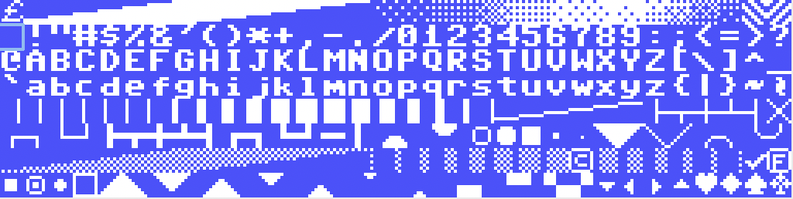
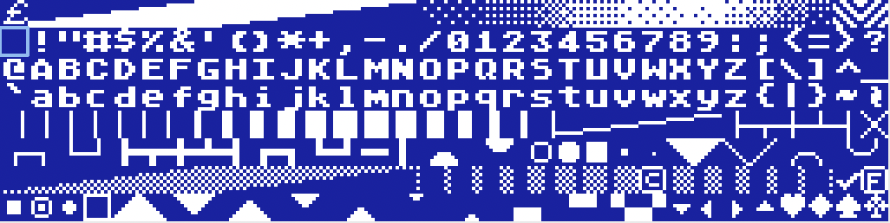
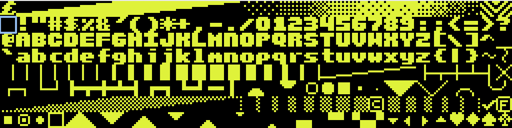

These are 8x8 fonts for use with the Foenix F256JR and K retro computers. Each font will have a standard layout that matches the character positions of the standard F256 font in ROM. Some fonts include an international (i18n) version which sacrifices some drawing characters for accented characters. The easiest way to load the fonts on your Foenix is to put them on an SD card, then load them into memory using the F256 file manager, “f/manager”. If you select an .fnt file in f/manager, hitting enter or “l” with load the font into memory. You can also load them through BASIC, assembly, etc.







